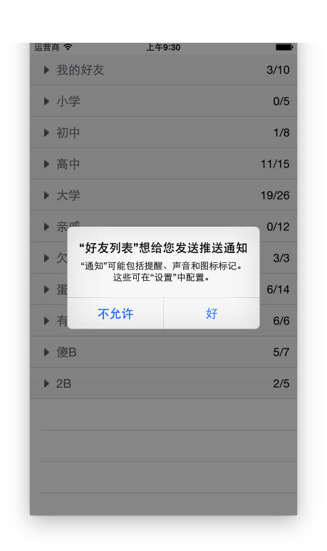
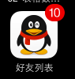
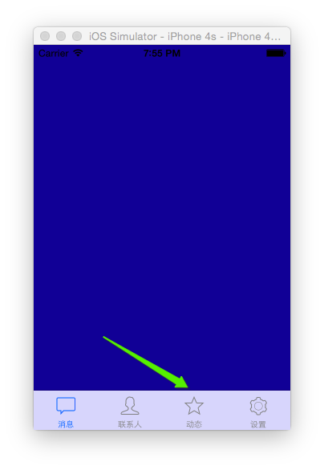

程序跳转程序后台手机状态栏
iOS8之后程序未读消息提示badge主动权交给用户

1
2
3
4
| UIApplication *app = [UIApplication sharedApplication];
app.applicationIconBadgeNumber = 10;
UIUserNotificationSettings *setting = [UIUserNotificationSettings settingsForTypes:UIUserNotificationTypeBadge categories:nil];
[app registerUserNotificationSettings:setting];
|
- iOS8之后必须有如下代码来实现badge提示
- 也意味着是否提示由用户来确认,不会写死,影响用户体验

info.plist注意事项
Localiztion native development region(CFBundleDevelopmentRegion)-本地化相关
Bundle display name(CFBundleDisplayName)-程序安装后显示的名称,限制在10－12个字符，如果超出，将被显示缩写名称
Icon file(CFBundleIconFile)-app图标名称,一般为Icon.png
Bundle version(CFBundleShortVersionString)-应用程序的版本号，每次往App Store上发布一个新版本时，需要增加这个版本号
Main storyboard file base name(NSMainStoryboardFile)-主storyboard文件的名称
Bundle identifier(CFBundleIdentifier)-项目的唯一标识，部署到真机时用到
UIWindow注意事项
[UIApplication sharedApplication].windows
在本应用中打开的UIWindow列表，这样就可以接触应用中的任何一个UIView对象
(平时输入文字弹出的键盘，就处在一个新的UIWindow中)
[UIApplication sharedApplication].keyWindow
用来接收键盘以及非触摸类的消息事件的UIWindow，而且程序中每个时刻只能有一个UIWindow是keyWindow。如果某个UIWindow内部的文本框不能输入文字，可能是因为这个UIWindow不是keyWindow
view.window
获得某个UIView所在的UIWindow
UITabBarController通常是作为整个程序的rootViewController
创建一个自定义HYWTabBarController对象
通过设置UITabBarController对象为window.rootViewController，然后显示window
在自定义tabbarcontroller中添加child控制器
1
2
3
4
5
6
7
8
9
10
11
12
13
14
| - (BOOL)application:(UIApplication *)application didFinishLaunchingWithOptions:(NSDictionary *)launchOptions {
// 这是自定义TabBarcontroller为主窗口根控制器
UIWindow *window = [[UIWindow alloc] init];
window.frame = [UIScreen mainScreen].bounds;
HYWTabBarController *tabBarVc = [[HYWTabBarController alloc] init];
window.rootViewController = tabBarVc;
// 显示主窗口
self.window = window;
[self.window makeKeyAndVisible];
return YES;
}
|
效果如下

1
2
3
4
5
6
7
8
9
10
11
12
13
14
15
16
17
18
19
20
21
22
23
24
| - (void)viewDidLoad {
[super viewDidLoad];
UIViewController *oneVc,*twoVc,*threeVc,*fourVc,*fiveVc;
oneVc = [[UIViewController alloc] init];
oneVc.tabBarItem.image = [UIImage imageNamed:@"tab_recent_nor"];
oneVc.title = @"消息";
oneVc.view.backgroundColor = HYWRandomColor;
twoVc = [[UIViewController alloc] init];
twoVc.tabBarItem.image = [UIImage imageNamed:@"tab_buddy_nor"];
twoVc.title = @"联系人";
twoVc.view.backgroundColor = HYWRandomColor;
threeVc = [[UIViewController alloc] init];
threeVc.tabBarItem.image = [UIImage imageNamed:@"tab_qworld_nor"];
threeVc.title = @"动态";
threeVc.view.backgroundColor = HYWRandomColor;
fourVc = [[UIViewController alloc] init];
fourVc.tabBarItem.image = [UIImage imageNamed:@"tab_me_nor"];
fourVc.title = @"设置";
fourVc.view.backgroundColor = HYWRandomColor;
fiveVc = [[UIViewController alloc] init];
self.viewControllers = @[oneVc,twoVc,threeVc,fourVc];
}
|